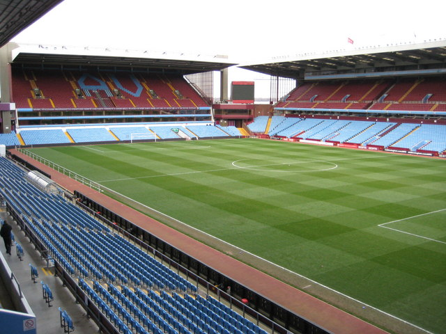
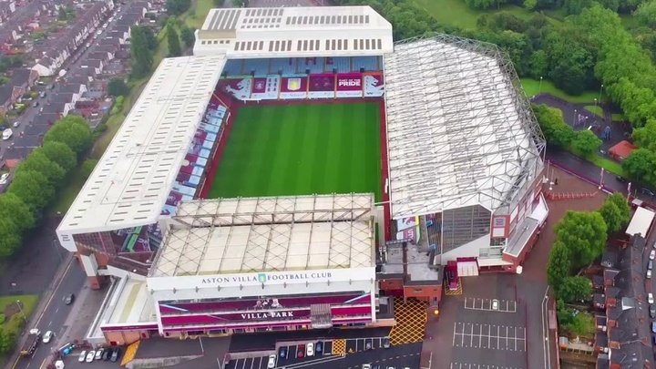

ASTON VILLA

Nombre completo: Aston Villa Football Club
Apodo: The Villains (Los Villanos)
Fundacion: 1874
Ciudad: Birmingham, West Midlands
Estadio: Estadio Villa Park
TITULOS

Premier League
7
1893/94 - 1895/96 - 1896/97 - 1898/99 - 1899/00 - 1909/10 - 1980/81

Sky By Championship
2
1937/38 - 1959/60.

Fa Cup
7
1886/87 - 1894/95 - 1896/97 - 1904/05 - 1912/13 - 1919/20 - 1956/57

Community Shield
1
1981

Carabao Cup
5
1961 - 1975 - 1977 - 1994 - 1996

UEFA Champions League
1
1981/82

Supercopa UEFA
1
1982
ESTADIO
Nombre: Estadio Villa Park
Fundacion: 1897
Ciudad: Birmingham, West Midlands
Espectadores: 43.000 espectadores

